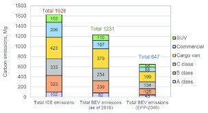
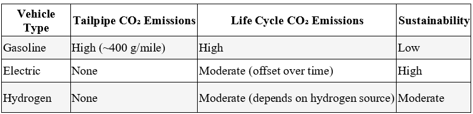
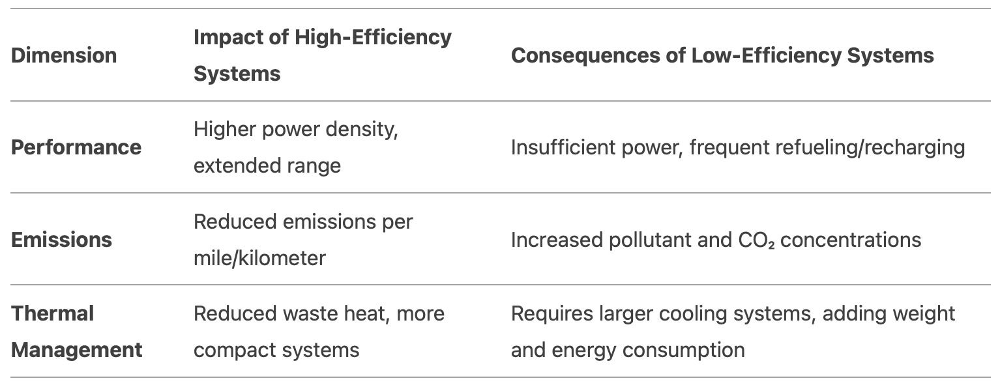
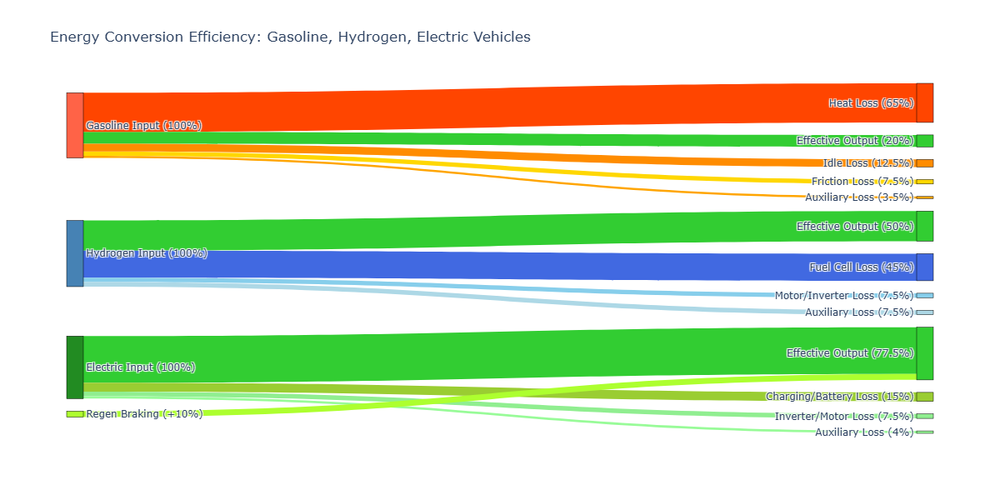

Biology: Physiological impact of each emissions profile
Gasoline Vehicles (Internal Combustion Engine - ICE)
Gasoline Vehicles emit various pollutants that raises severe physiological impacts on human health, including:
• Particulate matter – tiny solid and liquid particles which can travel into our lungs via airways and cause respiratory problems, decreased lung function, even premature deaths (singlehandedly cause up to 30,000 premature deaths each year)
• Carbon monoxide – temporarily cause dizziness and headaches, and in the long-run cause lasting nuerological problems
• Nitrogen dioxide – linked to asthma and heart attacks
• CO2 – mild CO2 exposure may cause headaches and drowsiness, whereas long-term elevated CO2 exposure may cause cancer, neurological disorders, lung problems etc.
Hydrogen Vehicles (Fuel Cell Electric Vehicles - FCEVs)
Hydrogen-powered fuel cell electric vehicles emit none of these harmful substances—only water (H2O) and warm air, therefore in terms of the human body, hydrogen vehicles does not directly cause any kind of negative physiological impact. Consideration – Hydrogen production (if from fossil fuels) may generate emissions, but "green hydrogen" (from renewables) is clean.
Electric Vehicles (Battery Electric Vehicles - BEVs)
Although EVs produce 0 Tailpipe Emissions (i.e. no direct emissions), however, EV batteries contain substances like nickel, manganese, cobalt, etc. all of which emit significant amounts of greenhouse gases. Comparatively, burning fossil fuels to make and drive electric cars will still cause less than Internal Combustion Engine. See graph 1:

Types of emissions between different cars
Gasoline Cars
1.Tailpipe Emissions: Approximately 400 grams of CO₂ per mile.
2.Annual Emissions: About 4.6 metric tons of CO₂ per year for a typical passenger vehicle.
3.Sustainability: Low. Relies on fossil fuels, contributing significantly to greenhouse gas emissions and climate change.
Electric Cars
1.Tailpipe Emissions: Zero.
2.Life Cycle Emissions: Approximately 206 grams of CO₂ per mile, which is about half that of a comparable gasoline vehicle.
3.Battery Production: Manufacturing batteries can emit about 60% more carbon than producing a fossil fuel car, but this "carbon debt" is typically offset within two years of driving an EV.
4.Sustainability: High. Especially when powered by renewable energy sources, EVs offer significant reductions in greenhouse gas emissions over their lifetime.
Hydrogen Fuel Cell Cars
1.Tailpipe Emissions: Only water vapor.
2.Life Cycle Emissions: Even when fueled by hydrogen from fossil-based production, FCEVs have 15%–45% lower well-to-wheels GHG emissions compared to gasoline vehicles.
3.Hydrogen Production: Currently, over 95% of hydrogen is produced via steam methane reforming, emitting about 9 kg of CO₂ per kg of hydrogen.
4.Sustainability: Moderate. Potential increases with green hydrogen production and infrastructure development.

Physics Theory: Energy Chain
Gasoline car
chemical energy (fuel) - thermal energy - mechanical energy (wheels)
Loss point: huge energy loss (70%), friction loss
Overall Efficiency: 25%
Hydrogen Fuel cars
chemical energy (H2 + O2) - Electrical energy - mechanical energy
Heat loss in fuel cell, electrical loses
Overall Efficiency: 40%-60%
Electric cars
electrical energy (battery) - mechanical energy
minor heat losses in motor, battery resistance
Overall Efficiency: 85-95%


If you want to know more click here